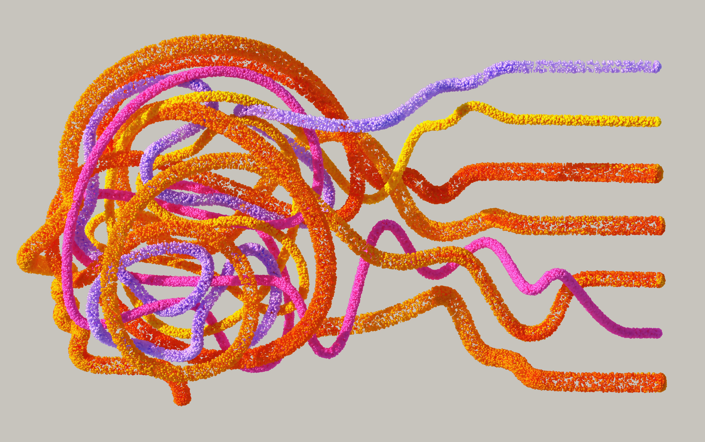
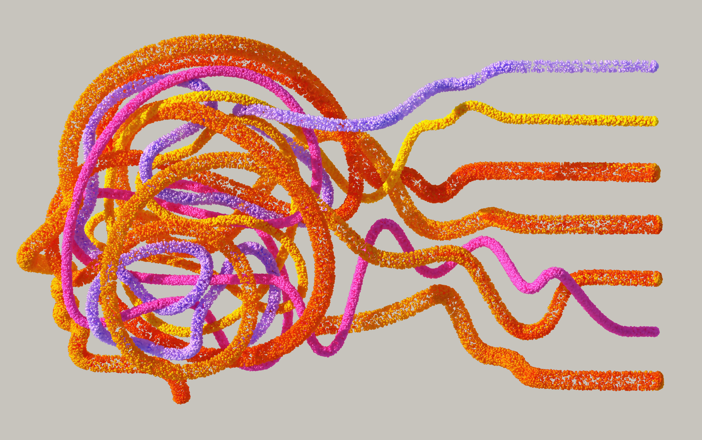

IF Sul lança novo curso de Tecnologia em Inteligência Artificial para impulsionar inovação na região
22 de Agosto de 2023
O Instituto Federal de Educação, Ciência e Tecnologia do Sul (IFSul) está dando mais um passo significativo na vanguarda da educação tecnológica com o lançamento do novo curso de Tecnologia em Inteligência Artificial. A decisão de incorporar essa especialização reflete a compreensão do IFSul sobre a importância estratégica da Inteligência Artificial (IA) nos cenários profissionais contemporâneos.
A IA, que está rapidamente se tornando um motor de inovação em diversas indústrias, desde a saúde até a agricultura, exige uma mão de obra altamente qualificada. O IFSul está comprometido em atender a essa demanda crescente, proporcionando aos alunos uma educação que os capacitará para enfrentar os desafios complexos e dinâmicos desse campo em constante evolução.
O curso abrangerá uma variedade de tópicos, incluindo, mas não se limitando a, aprendizado de máquina, processamento de linguagem natural e visão computacional. Os estudantes serão imersos em ambientes práticos por meio de laboratórios equipados com tecnologia de ponta, garantindo que possam aplicar seus conhecimentos teóricos de maneira tangível.
"Estamos entusiasmados em oferecer aos nossos alunos a oportunidade de se aprofundarem em um campo tão inovador e crucial como a Inteligência Artificial", afirmou a diretora acadêmica do IFSul. "Com essa iniciativa, estamos não apenas atendendo às necessidades do mercado, mas também moldando os futuros líderes e inovadores na área de tecnologia."
Além do benefício direto para os estudantes, a introdução do curso de Tecnologia em Inteligência Artificial destaca o compromisso contínuo do IFSul em contribuir para o desenvolvimento regional, preparando profissionais altamente capacitados que podem impulsionar a inovação e o crescimento econômico.
O IFSul já está aceitando inscrições para o novo curso, que se inicia no próximo semestre. A instituição espera atrair uma comunidade diversificada de estudantes interessados em explorar as vastas possibilidades oferecidas pela Inteligência Artificial. Este é mais um passo empolgante em direção ao fortalecimento da posição do IFSul como uma instituição de ensino comprometida com a excelência e a relevância no cenário educacional brasileiro.